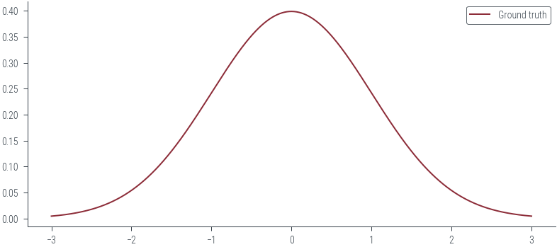
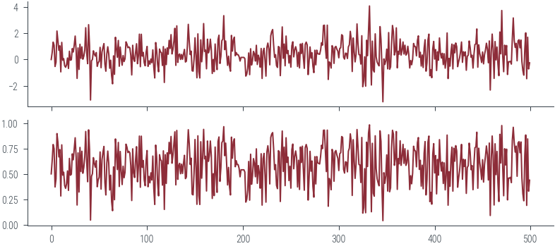

import os
os.environ["CUDA_VISIBLE_DEVICES"] = "3"
import torch
import torch.autograd.functional as F
import torch.distributions as dist
import numpy as np
import matplotlib.pyplot as plt
from matplotlib.animation import FuncAnimation
import pandas as pd
%matplotlib inline
# Retina display
%config InlineBackend.figure_format = 'retina'from tueplots import bundles
plt.rcParams.update(bundles.beamer_moml())
# plt.rcParams.update(bundles.icml2022())
# Also add despine to the bundle using rcParams
plt.rcParams["axes.spines.right"] = False
plt.rcParams["axes.spines.top"] = False
# Increase font size to match Beamer template
plt.rcParams["font.size"] = 16
# Make background transparent
plt.rcParams["figure.facecolor"] = "none"import hamiltorchhamiltorch.set_random_seed(123)
device = torch.device("cuda" if torch.cuda.is_available() else "cpu")devicedevice(type='cuda')gt_distribution = torch.distributions.Normal(0, 1)
# Samples from the ground truth distribution
def sample_gt(n):
return gt_distribution.sample((n,))
samples = sample_gt(1000)x_lin = torch.linspace(-3, 3, 1000)
y_lin = torch.exp(gt_distribution.log_prob(x_lin))
plt.plot(x_lin, y_lin, label="Ground truth")
plt.legend()<matplotlib.legend.Legend at 0x7fb356939c40>
# Logprob function to be passed to Hamiltorch sampler
def logprob(x):
return gt_distribution.log_prob(x)logprob(torch.tensor([0.0]))tensor([-0.9189])# Initial state
x0 = torch.tensor([0.0])
num_samples = 5000
step_size = 0.3
num_steps_per_sample = 5
hamiltorch.set_random_seed(123)params_hmc = hamiltorch.sample(
log_prob_func=logprob,
params_init=x0,
num_samples=num_samples,
step_size=step_size,
num_steps_per_sample=num_steps_per_sample,
)Sampling (Sampler.HMC; Integrator.IMPLICIT)
Time spent | Time remain.| Progress | Samples | Samples/sec
0d:00:00:07 | 0d:00:00:00 | #################### | 5000/5000 | 698.22
Acceptance Rate 0.99params_hmc = torch.tensor(params_hmc)# Trace plot
plt.plot(params_hmc, label="Trace")
plt.xlabel("Iteration")
plt.ylabel("Parameter value")Text(0, 0.5, 'Parameter value')
# view first 500 samples
plt.plot(params_hmc[:500], label="Trace")
plt.xlabel("Iteration")
plt.ylabel("Parameter value")Text(0, 0.5, 'Parameter value')# KDE plot
import seaborn as sns
plt.figure()
sns.kdeplot(params_hmc.detach().numpy(), label="Samples", shade=True, color="C1")
plt.plot(x_lin, y_lin, label="Ground truth")
plt.xlabel("Parameter value")
plt.ylabel("Density")
plt.legend()<matplotlib.legend.Legend at 0x7fb353810dc0>def plot_samples_gif(x_lin, y_lin, params_hmc, filename, frames=50):
fig, ax = plt.subplots()
plt.plot(x_lin, y_lin, label="Ground truth")
scatter = ax.scatter([], [], color="C1", marker="x", s=100)
# Function to update the animation
def update(frame):
scatter.set_offsets(np.array([[params_hmc[frame], 0]]))
return (scatter,)
# Create the animation
anim = FuncAnimation(fig, update, frames=frames, blit=True)
# Save the animation as a GIF or video file (you can change the filename and format)
anim.save(filename, dpi=200)plot_samples_gif(
x_lin, y_lin, params_hmc, "../figures/sampling/mcmc/hamiltorch-samples-normal.gif"
)# sample from Mixture of Gaussians
mog = dist.MixtureSameFamily(
mixture_distribution=dist.Categorical(torch.tensor([0.3, 0.7])),
component_distribution=dist.Normal(
torch.tensor([-2.0, 2.0]), torch.tensor([1.0, 0.5])
),
)
samples = mog.sample((1000,))
sns.kdeplot(samples.numpy(), label="Samples", shade=True, color="C1")<AxesSubplot:ylabel='Density'>
# Logprob function to be passed to Hamiltorch sampler
def logprob(x):
return mog.log_prob(x)
logprob(torch.tensor([0.0]))tensor([-4.1114])# Initial state
x0 = torch.tensor([0.0])
num_samples = 5000
step_size = 0.3
num_steps_per_sample = 5
hamiltorch.set_random_seed(123)
params_hmc = hamiltorch.sample(
log_prob_func=logprob,
params_init=x0,
num_samples=num_samples,
step_size=step_size,
num_steps_per_sample=num_steps_per_sample,
)Sampling (Sampler.HMC; Integrator.IMPLICIT)
Time spent | Time remain.| Progress | Samples | Samples/sec
0d:00:00:10 | 0d:00:00:00 | #################### | 5000/5000 | 462.18
Acceptance Rate 0.99params_hmc = torch.tensor(params_hmc)# Trace plot
plt.plot(params_hmc[:500], label="Trace")y_lin = torch.exp(mog.log_prob(x_lin))
plot_samples_gif(
x_lin,
y_lin,
params_hmc,
"../figures/sampling/mcmc/hamiltorch-samples-mog.gif",
frames=300,
)def p_tilde(x):
# normalising constant for standard normal distribution
Z = torch.sqrt(torch.tensor(2 * np.pi))
return dist.Normal(0, 1).log_prob(x).exp() * Z
def p_tilde_log_prob(x):
# normalising constant for standard normal distribution
Z = torch.sqrt(torch.tensor(2 * np.pi))
return dist.Normal(0, 1).log_prob(x) + torch.log(Z)# Plot unnormalized distribution
x_lin = torch.linspace(-3, 3, 1000)
y_lin = p_tilde(x_lin)
plt.plot(x_lin, y_lin, label="Unnormalized distribution")
# Plot normalized distribution
plt.plot(
x_lin, dist.Normal(0, 1).log_prob(x_lin).exp(), label="Normalized distribution"
)
plt.legend()<matplotlib.legend.Legend at 0x7fb3378375e0># HMC over unnormalized distribution
# Logprob function to be passed to Hamiltorch sampler
def logprob(x):
return p_tilde_log_prob(x)# HMC
x0 = torch.tensor([0.0])
num_samples = 5000
step_size = 0.3
num_steps_per_sample = 5
hamiltorch.set_random_seed(123)
params_hmc = hamiltorch.sample(
log_prob_func=logprob,
params_init=x0,
num_samples=num_samples,
step_size=step_size,
num_steps_per_sample=num_steps_per_sample,
)
params_hmc = torch.tensor(params_hmc)Sampling (Sampler.HMC; Integrator.IMPLICIT)
Time spent | Time remain.| Progress | Samples | Samples/sec
0d:00:00:10 | 0d:00:00:00 | #################### | 5000/5000 | 488.07
Acceptance Rate 0.99# Trace plot
plt.plot(params_hmc[:500], label="Trace")
# KDE plot
sns.kdeplot(params_hmc.detach().numpy(), label="Samples", shade=True, color="C1")
plt.plot(x_lin, y_lin, label="Unnormalized distribution")
plt.plot(
x_lin, dist.Normal(0, 1).log_prob(x_lin).exp(), label="Normalized distribution"
)
plt.legend()<matplotlib.legend.Legend at 0x7fb3377450d0># Coin toss
prior = dist.Beta(1, 1)
data = torch.tensor([1.0, 1.0, 1.0, 0.0, 0.0])
n = len(data)
def log_prior(theta):
return prior.log_prob(theta)
def log_likelihood(theta):
return dist.Bernoulli(theta).log_prob(data).sum()
def negative_log_joint(theta):
return log_prior(theta) + log_likelihood(theta)def run_hmc(logprob, x0, num_samples, step_size, num_steps_per_sample):
torch.manual_seed(12)
params_hmc = hamiltorch.sample(
log_prob_func=logprob,
params_init=x0,
num_samples=num_samples,
step_size=step_size,
num_steps_per_sample=num_steps_per_sample,
)
return torch.stack(params_hmc)try:
params_hmc_theta = run_hmc(negative_log_joint, torch.tensor([0.5]), 5000, 0.3, 5)
except Exception as e:
print(e)Sampling (Sampler.HMC; Integrator.IMPLICIT)
Time spent | Time remain.| Progress | Samples | Samples/sec
Expected value argument (Tensor of shape (1,)) to be within the support (Interval(lower_bound=0.0, upper_bound=1.0)) of the distribution Beta(), but found invalid values:
tensor([-0.1017], requires_grad=True)# Let us work instead with logits
def log_prior(logits):
return prior.log_prob(torch.sigmoid(logits)).sum()
def log_likelihood(logits):
return dist.Bernoulli(logits=logits).log_prob(data).sum()
def log_joint(logits):
return log_prior(logits) + log_likelihood(logits)params_hmc_logits = run_hmc(log_joint, torch.tensor([0.0]), 1000, 0.3, 5)Sampling (Sampler.HMC; Integrator.IMPLICIT)
Time spent | Time remain.| Progress | Samples | Samples/sec
0d:00:00:03 | 0d:00:00:00 | #################### | 1000/1000 | 278.54
Acceptance Rate 0.99fig, ax = plt.subplots(nrows=2, sharex=True)
ax[0].plot(params_hmc_logits[:500], label="Trace")
ax[1].plot(torch.sigmoid(params_hmc_logits[:500]), label="Trace")
params_hmc_logits[:, 0]tensor([ 0.0000e+00, 5.2157e-01, 1.3223e+00, 1.0867e+00, -5.2568e-01,
-2.0241e-01, 2.1629e+00, 1.4570e+00, 6.9446e-01, 1.0426e+00,
-9.3411e-01, 1.3008e+00, -4.8513e-02, 6.5970e-02, -4.6523e-01,
-5.8596e-01, -4.0162e-01, 1.1607e-01, -6.7595e-01, 6.2900e-01,
-5.1382e-02, -1.5011e-02, 8.3155e-01, 5.7020e-01, 1.1027e+00,
1.7802e+00, 6.8140e-01, -1.4304e+00, 8.8081e-01, -7.4787e-01,
1.1560e+00, 9.3348e-02, 9.5877e-01, 2.4764e-02, 2.5223e-01,
7.0275e-01, 2.4133e+00, 5.0036e-01, -3.1154e-01, 2.6437e+00,
1.0347e+00, -3.0697e+00, -9.9357e-02, 7.0691e-03, 6.6288e-01,
4.2240e-01, 2.6325e-01, 5.3176e-01, -5.1853e-01, -2.3356e-01,
-1.3524e-01, 9.2447e-01, -6.1977e-01, 5.7892e-01, 9.1914e-01,
1.2103e+00, -3.4587e-01, -8.8387e-01, 4.2828e-01, 9.6681e-01,
4.3113e-01, -6.5857e-01, -5.3167e-02, -1.2148e+00, -1.8391e+00,
2.7865e-01, -1.1244e+00, 1.6879e+00, 8.4666e-01, 1.7127e-01,
1.4485e+00, -5.0676e-01, 9.4826e-01, 1.2424e-01, -4.2752e-01,
3.0383e-01, -1.5217e-01, 6.3599e-02, 1.3415e+00, 1.1742e+00,
8.9259e-01, 9.5579e-01, 8.8160e-01, 3.3091e-01, -1.1668e+00,
1.0816e+00, 5.1343e-02, -1.4267e-01, 5.5287e-01, 1.1972e+00,
-3.1179e-01, 3.0234e-01, 1.9230e+00, -5.4003e-01, 1.9161e+00,
2.5963e-01, 5.3916e-01, -2.3909e-01, -4.7502e-01, 5.5535e-01,
9.9362e-01, -5.1886e-01, -1.0049e-01, -3.5520e-01, 4.1397e-02,
-2.3988e-01, 7.3340e-01, -6.0357e-01, -1.3952e+00, 1.2863e+00,
6.9414e-01, -3.6833e-01, -9.2557e-01, 7.9619e-01, 5.7926e-01,
5.2438e-01, -4.5046e-01, 9.7921e-01, -1.7372e+00, 7.9464e-01,
-3.8177e-01, 8.8204e-01, 4.0353e-01, 1.4525e+00, 8.4391e-01,
1.8884e+00, 4.2759e-01, 7.8184e-01, 1.4167e+00, 2.3686e+00,
-4.3994e-01, 2.5539e+00, -2.1615e-01, 3.3379e-01, 4.2178e-01,
5.1721e-03, 3.8601e-01, 1.7428e-02, 4.2170e-01, 7.6588e-01,
-1.8764e-01, -1.2382e-01, 9.7327e-01, 2.6694e+00, 1.3677e+00,
3.7424e-01, 6.3888e-01, -8.4959e-01, -8.8009e-01, 2.3543e-02,
1.6492e+00, 2.7357e-01, -1.3845e+00, 1.9475e+00, -9.1431e-01,
-1.3962e+00, 1.4945e+00, -1.6934e-01, 6.8331e-01, 2.7269e+00,
6.1146e-01, 7.2529e-01, -7.0244e-01, 1.5423e+00, 5.0477e-01,
7.5417e-01, 1.5440e+00, 7.5432e-01, -1.0567e+00, 6.8278e-03,
-9.1455e-01, 1.1774e+00, -4.7259e-02, -7.6331e-01, 1.5087e+00,
1.8454e+00, -2.9682e-01, 2.4198e-01, 1.4402e+00, 1.5362e+00,
3.3266e+00, 7.4973e-01, 1.4066e+00, 3.8852e-01, -4.4323e-01,
2.5634e-01, -5.2011e-01, -8.8203e-01, 1.8299e+00, 6.3801e-01,
1.4932e+00, 1.7013e+00, 2.8509e-01, 5.3203e-01, 3.7003e-01,
3.6926e-01, 2.1920e-01, -1.1465e-01, 1.6096e-01, 1.6096e-01,
1.6096e-01, 1.6096e-01, 7.3189e-02, -1.2568e+00, -1.0996e+00,
-6.6443e-01, 4.9931e-01, -1.1474e+00, 8.1839e-01, -4.1737e-01,
-7.6412e-02, 6.2048e-01, 4.2288e-01, -1.1374e-01, 1.0812e+00,
-3.7642e-01, 3.3120e-01, 6.6237e-02, -5.7989e-01, 8.3937e-01,
-1.4361e+00, 6.1602e-01, 8.5366e-01, -3.5081e-02, -1.2576e+00,
9.2308e-01, 1.2499e+00, 7.9868e-01, -4.0161e-01, 1.8000e+00,
2.1205e+00, 2.2769e+00, 1.1112e+00, 1.6897e-01, 3.6750e-01,
-4.5992e-01, -6.0003e-01, 9.8896e-01, 9.2506e-01, -1.2205e+00,
6.2656e-01, 2.4740e+00, 9.4190e-02, 1.1711e+00, -4.7227e-01,
1.7815e+00, 4.5940e-01, 6.8583e-01, -2.6535e-01, 3.0298e-01,
-5.7829e-01, 1.0377e+00, 1.3456e+00, 2.0190e-01, 7.1908e-01,
9.7466e-01, 6.5028e-01, -5.2753e-01, 5.5185e-01, -6.3477e-01,
1.1783e+00, 4.5608e-01, 1.2227e+00, 1.8145e-01, -6.6724e-01,
1.1463e+00, 1.3225e+00, 1.1086e+00, -1.1422e+00, -1.5377e-01,
9.5494e-01, 1.0698e-01, 5.1788e-01, -5.0524e-01, -9.8988e-01,
7.0583e-01, -4.0222e-01, 7.1202e-01, 4.4194e-01, 4.2165e-01,
3.9502e-01, 7.1842e-01, 1.2794e+00, 1.0915e+00, 2.5821e+00,
2.6053e+00, 9.5238e-01, 9.0762e-02, 2.6056e+00, -1.5100e+00,
-1.8069e-01, -2.9206e-01, -6.4654e-01, 1.0541e+00, 8.5845e-01,
-2.9253e-01, 9.3141e-01, 9.9560e-01, 7.7755e-01, 6.4045e-01,
1.3102e-01, 8.4557e-01, 8.8637e-01, 1.8827e+00, 1.8122e+00,
1.7478e-01, 3.1308e-02, 4.8694e-01, 4.5788e-01, 7.9718e-02,
9.6236e-01, 1.1176e+00, 2.1386e+00, 1.5038e+00, -9.0693e-01,
1.6350e+00, 6.3332e-01, -1.7795e-01, 3.8162e-01, 2.7007e+00,
1.2218e+00, 3.7495e-01, 3.5609e-01, -3.4414e-01, 1.8059e+00,
-2.0574e+00, -1.6110e+00, 2.0561e-01, -2.0184e+00, 1.4640e+00,
2.9137e-01, 2.2045e+00, 4.0625e+00, 8.4217e-01, -1.9306e+00,
1.3940e+00, -8.0387e-01, -9.4434e-01, 1.9487e+00, 1.9015e-01,
-1.9470e-01, -3.5154e-01, -4.7942e-01, 2.4984e+00, 1.5140e+00,
-5.1064e-01, -3.2031e+00, 4.6453e-02, -3.7326e-01, -7.8675e-02,
7.8834e-01, -7.0566e-01, 2.0437e+00, -7.3646e-01, -5.6822e-01,
1.1436e+00, 2.5813e+00, 2.1137e+00, 3.4318e-01, 6.2561e-01,
2.4020e+00, -6.3089e-01, 6.2534e-01, 4.0191e-01, 1.5595e+00,
3.4065e-01, 7.1987e-01, 1.3318e+00, 4.2015e-01, 1.0865e+00,
3.3707e-01, 4.4238e-01, 1.0057e+00, 4.0243e-01, -6.3879e-01,
-7.3347e-02, -3.9503e-01, 2.3499e-02, 1.2202e+00, 1.0019e+00,
9.6899e-01, 2.8081e-01, 1.4312e+00, 1.7951e+00, 1.7800e-01,
5.4844e-01, -4.9231e-01, 3.4481e-01, -6.0484e-01, 8.6655e-01,
1.5038e+00, -8.8249e-01, -2.3613e-01, 1.4711e+00, 1.9242e+00,
-1.2292e+00, -7.6492e-01, -1.3766e+00, 8.1369e-01, 1.3737e+00,
3.7870e-02, 7.5596e-01, -8.3360e-01, 5.8478e-01, -4.8147e-02,
1.6379e+00, 4.9499e-01, 1.1217e-01, 4.7315e-01, -3.8294e-01,
4.4057e-01, -6.5282e-01, -6.9137e-02, 2.0160e+00, -1.4416e+00,
8.7326e-02, -5.0134e-01, 5.9610e-01, 1.1678e+00, -7.0852e-01,
1.1161e+00, 5.1063e-01, 1.2536e+00, 9.7398e-01, -5.3866e-01,
-1.5744e-01, 1.3044e-01, 5.9685e-01, 1.3283e+00, -2.1259e-01,
5.9374e-01, 2.9467e-01, 5.7726e-01, -8.1029e-01, 2.4936e-01,
3.2499e-01, 1.4028e+00, 9.2111e-01, 1.6626e-01, 3.2936e-01,
-6.4536e-01, 4.0314e-01, 1.1408e+00, 1.1855e+00, 2.3198e+00,
-5.8188e-01, 1.1133e+00, 4.7731e-01, 1.7239e-01, -2.2253e-01,
5.7479e-01, -3.2582e-01, 3.6510e-01, 7.3250e-01, 1.2381e+00,
7.9945e-01, -2.4175e-01, 1.4102e+00, -2.3131e+00, 5.3915e-01,
1.9302e+00, 7.3718e-01, -1.4272e+00, 1.3649e+00, -3.0076e-02,
9.5023e-01, -3.3479e-01, -1.2208e+00, 2.0888e+00, 4.3582e-01,
3.7189e+00, 2.6196e-01, -9.2166e-01, 1.0887e+00, 3.5772e-01,
1.0647e+00, -1.1317e+00, -1.6681e-01, -1.6681e-01, -1.3717e-01,
-3.4850e-01, 1.5862e+00, 3.1538e+00, 1.4352e+00, 9.1958e-01,
1.2272e+00, -9.4940e-02, 1.4208e+00, 1.4999e+00, 8.8756e-01,
1.4787e+00, -1.6487e-01, -8.3603e-01, -1.1821e+00, 7.5473e-01,
2.0233e+00, -1.4535e+00, 1.6937e+00, -7.1143e-01, -2.5059e-01,
2.3465e-01, 4.7424e-01, 4.7742e-01, 3.3519e-01, 3.3519e-01,
8.8493e-01, 1.1561e+00, -3.1853e-01, -3.9363e-02, 6.7079e-01,
5.6049e-01, -5.4034e-01, -2.2138e-01, 2.1434e-01, 1.5668e+00,
-5.0666e-01, 1.2336e+00, 6.0810e-01, 1.0208e+00, -1.0918e-01,
6.1068e-01, 3.4561e-01, 3.1687e-01, 1.9952e-01, -4.2316e-01,
-6.8547e-01, 1.2960e+00, 4.3325e-01, -7.4669e-01, 3.4048e-01,
5.0448e-01, 1.9143e+00, 3.3597e+00, 7.2327e-01, 7.2327e-01,
1.9814e+00, 1.7529e+00, 1.2328e+00, 2.3874e+00, 8.9311e-01,
1.5371e+00, 6.3213e-01, -5.3584e-01, 1.6869e-01, 7.2835e-01,
5.0431e-01, 1.2030e+00, 1.8420e+00, 3.5781e+00, 2.5207e+00,
9.1733e-01, 1.2418e+00, 1.0947e+00, -3.2848e-01, 1.4335e+00,
1.5814e+00, 1.5399e+00, 1.1806e+00, 2.0780e+00, 2.3361e+00,
7.9356e-02, 1.9177e+00, -2.2122e-01, 2.0555e+00, 1.2023e+00,
5.6297e-01, 1.7306e+00, -4.2852e-01, 9.2878e-01, -5.6072e-01,
6.1711e-01, 1.4516e+00, 9.8128e-01, 1.4595e+00, 6.1320e-01,
-1.5955e+00, 5.4722e-01, 1.9468e+00, 4.5901e-02, 8.8389e-01,
-3.5987e-01, 1.2097e+00, 6.5788e-01, -6.0313e-01, -3.5547e-01,
7.2529e-01, -6.0797e-03, 1.8000e+00, 6.2690e-01, 8.4397e-01,
-5.3849e-01, 1.6233e+00, 1.9809e+00, -3.7226e-01, 1.0213e-01,
3.9237e-01, 5.6708e-02, 5.8428e-01, 9.4924e-01, 2.1116e+00,
1.3148e+00, -1.0424e-01, -2.1544e-02, 1.3272e+00, 3.0616e+00,
9.9475e-01, -1.5997e-01, -5.3483e-01, -5.4581e-01, 1.4050e+00,
1.8539e+00, 1.6646e+00, -3.4664e-01, 2.1784e-01, -7.7635e-01,
2.7252e+00, -6.2144e-01, -8.7422e-01, 4.6023e-01, -6.9424e-01,
-9.1952e-01, -3.1647e-02, 4.7649e-01, 1.8191e+00, -3.3237e-01,
1.6256e+00, 3.2647e-01, 1.3099e+00, 3.6260e-01, 1.0741e+00,
-1.5744e-01, -2.6766e-01, 8.3143e-01, 8.5419e-01, 1.2322e+00,
-1.1485e+00, 3.7815e-01, -2.8660e-01, 1.5768e+00, -3.4889e-01,
9.6623e-01, 7.0870e-01, 5.1634e-01, 1.2491e+00, 8.7313e-01,
-4.7971e-01, 3.6604e-01, -4.4042e-01, 6.1318e-02, -1.5561e-01,
-1.3538e-01, -2.0977e+00, -1.6288e+00, 5.0716e-01, -5.4127e-01,
-5.1384e-01, 1.0936e+00, 1.3244e+00, 3.1679e-01, 1.6746e+00,
1.9762e+00, 1.9939e-01, 1.5693e+00, 1.2094e+00, 3.3478e+00,
1.2666e+00, 2.0992e+00, 2.8287e-02, -4.1169e-01, -6.8056e-01,
1.0113e+00, -6.9923e-01, 1.6349e+00, -7.5508e-01, 1.5240e+00,
-4.1570e-01, -4.9153e-02, 3.1265e-01, 2.4256e+00, 9.4421e-01,
1.2525e-01, 2.6237e-01, -1.7258e-01, 4.4751e-01, -4.6017e-01,
1.7248e-02, 1.3471e+00, -9.5393e-01, 3.8606e-02, 6.6836e-01,
7.4823e-01, 7.3605e-01, 2.7526e-02, 1.6556e+00, 1.6328e+00,
1.8542e+00, 2.4735e+00, 1.0023e+00, -4.9651e-01, -9.9532e-01,
2.1426e-03, -3.1631e-02, -1.9769e+00, -1.2023e+00, 3.9273e-01,
3.5130e-01, 1.9974e-02, 1.8765e+00, -1.3989e+00, 1.0675e+00,
2.0070e-01, 7.1379e-01, -6.7666e-01, 8.5469e-01, 1.8344e-01,
-3.2166e-01, -3.2166e-01, 1.3211e+00, 4.1828e-01, 1.0699e+00,
1.5376e+00, -1.7779e-01, 2.8796e-01, 8.1860e-01, 5.8796e-01,
1.3816e+00, 1.3530e+00, 2.3099e-01, 2.4880e-01, 5.6564e-01,
1.2632e+00, -1.5422e+00, -1.2768e+00, -5.1313e-01, 7.9212e-01,
8.6664e-01, 1.8058e-01, 2.4497e-01, 3.2818e-01, 3.7874e-01,
5.5695e-01, -9.5376e-01, 5.0202e-01, -6.2435e-01, 1.0083e+00,
2.4775e-01, 1.9974e-01, 1.0435e+00, 1.8181e+00, 1.8181e+00,
1.5419e+00, -6.8479e-01, 1.0234e+00, 3.4072e-01, -6.8201e-01,
-6.0094e-03, 5.4767e-01, 1.2085e+00, 1.1278e+00, -2.5554e-01,
-9.6161e-01, -3.8192e-01, 2.3630e-02, 1.0346e+00, -1.9409e-01,
-1.7149e-01, 1.2116e+00, 1.0531e+00, 1.7023e-01, -4.3127e-01,
6.6011e-01, 7.7393e-01, -3.0603e-01, 1.0112e+00, 2.9591e-01,
1.2036e-01, -4.1267e-01, -4.4962e-01, 7.4402e-01, -6.3659e-01,
4.6125e-01, -1.3424e+00, 2.4050e-01, -2.0018e-01, 6.3407e-01,
-2.5910e-01, 9.2403e-02, -3.3480e-01, -3.3480e-01, -6.5366e-01,
2.5464e-01, 1.3055e+00, -1.5981e+00, 7.8798e-01, -4.1375e-01,
7.5003e-01, 6.3855e-02, -3.7143e-01, 1.5067e+00, 1.6203e+00,
5.0651e-01, 1.1662e+00, 6.5912e-01, 6.5912e-01, 9.6239e-01,
-2.9655e-02, -1.8119e+00, 1.4097e+00, 7.1906e-01, 6.5160e-01,
6.4548e-01, 8.0345e-01, 1.8066e+00, -1.8827e+00, -1.9057e+00,
1.7102e-01, -5.2693e-01, 1.8661e-01, 2.8774e-01, 9.7600e-01,
1.5767e+00, 1.0017e+00, 1.4579e+00, -3.2165e-03, 1.1204e+00,
1.5134e+00, 2.0321e+00, 1.6208e-01, -7.9307e-01, 1.5747e+00,
7.5000e-01, -3.5063e-03, 2.1710e+00, 9.3272e-01, -3.8879e-04,
1.1818e+00, -1.7795e-02, -2.4369e-01, -1.9889e+00, -5.1913e-01,
-7.0746e-01, 1.6388e+00, 1.4992e+00, 1.7651e+00, 3.5630e+00,
4.6029e-02, -1.4069e+00, 5.9076e-02, 2.2806e+00, -8.9770e-01,
-6.2536e-01, 1.6230e+00, 1.5135e+00, 7.6925e-01, -3.8131e-01,
1.7301e+00, 1.3660e+00, 6.2360e-01, 5.6905e-01, -3.4309e-01,
-1.1920e+00, 1.8200e+00, -5.0699e-01, 4.0612e-02, 1.2228e+00,
9.6594e-01, -7.0298e-01, -6.2520e-01, 1.6632e+00, 8.8678e-01,
5.2583e-01, 9.1454e-01, 1.4418e+00, 1.4364e+00, 5.6974e-01,
-1.1927e+00, 4.6645e-01, 5.5446e-01, 7.2413e-01, 1.9243e+00,
7.7880e-01, -7.4584e-01, 1.2390e+00, -1.1413e-01, 1.2299e+00,
1.0727e+00, -2.9502e-01, 3.1766e-01, 3.7765e-01, 9.4944e-01,
-2.1452e-01, -4.7935e-01, 1.0967e+00, -2.7905e-01, -8.6457e-01,
1.1860e+00, -1.1904e+00, 5.9031e-01, 6.6663e-01, 1.2639e+00,
6.7896e-02, -1.0120e+00, 2.5375e+00, 1.8990e+00, -1.0375e+00,
4.4640e-01, 1.4028e+00, 1.1473e+00, 6.1459e-01, 3.9804e-01,
7.8219e-01, 1.6068e+00, 5.6333e-01, 1.6903e-01, -8.0579e-01,
-7.3818e-01, 1.0135e+00, 1.1724e+00, -3.5863e-01, -3.4891e-01,
-2.9014e-01, 1.9020e+00, 1.0430e+00, 2.6433e+00, 3.1035e+00,
2.0789e+00, -4.8755e-01, -1.5892e+00, -1.9662e+00, 1.1934e+00,
1.1145e+00, -7.9593e-02, 1.2906e+00, 3.1053e-01, -5.8267e-01,
1.4457e+00, 7.9235e-01, 9.0271e-01, 4.6118e-01, 1.0147e+00,
2.2204e+00, 1.0090e+00, 2.4175e-01, -6.5125e-01, 5.9952e-01,
2.0044e+00, 8.9869e-01, -2.2489e-01, -1.0497e+00, 2.0135e+00,
-4.7356e-01, 4.7832e-01, -1.2162e-01, 1.1530e+00, -1.1612e-02,
1.4690e+00, 1.0307e+00, 2.2840e+00, 3.3513e+00, 8.8326e-01,
1.2590e+00, 1.7236e+00, 4.5989e-01, 6.4716e-01, 3.0418e-01,
3.9410e-01, 3.4654e-01, 1.4171e+00, 6.6960e-01, 6.7712e-01,
-2.0732e-01, -1.0382e-01, 9.9374e-01, 1.6327e+00, 3.1100e-01,
4.4393e-01, -2.9965e-01, 1.9955e-01, -9.0940e-03, 6.6451e-02,
1.8670e+00, 1.3433e+00, -1.4861e+00, -1.5094e+00, 1.1104e+00,
-4.7540e-02, 8.7289e-01, -8.7741e-01, 1.6113e+00, -2.0599e-01,
2.9714e-01, 2.4836e+00, 8.8014e-01, 2.2057e+00, 1.5712e+00,
6.9619e-02, 2.8588e-02, -3.6439e-01, 7.4889e-01, 9.1645e-01])# Plot posterior KDE using seaborn but clip to [0, 1]
sns.kdeplot(
torch.sigmoid(params_hmc_logits[:, 0]).detach().numpy(),
label="Samples",
shade=True,
color="C1",
clip=(0, 1),
)
# True posterior
x_lin = torch.linspace(0, 1, 1000)
y_lin = dist.Beta(1 + 3, 1 + 2).log_prob(x_lin).exp()
plt.plot(x_lin, y_lin, label="True posterior")
plt.legend()<matplotlib.legend.Legend at 0x7fb3376f4ac0># Linear regression for 1 dimensional input using HMC
torch.manual_seed(123)
x_lin = torch.linspace(-3, 3, 90)
theta_0_true = torch.tensor([2.0])
theta_1_true = torch.tensor([3.0])
f = lambda x: theta_0_true + theta_1_true * x
eps = torch.randn_like(x_lin) * 1.0
y_lin = f(x_lin) + eps
plt.scatter(x_lin, y_lin, label="Data", color="C0")
plt.plot(x_lin, f(x_lin), label="Ground truth")
plt.xlabel("x")
plt.ylabel("y")Text(0, 0.5, 'y')# Esimate theta_0, theta_1 using HMC assuming noise variance is known to be 1
def logprob(theta):
y_pred = theta[0] + x_lin * theta[1]
# print(y_pred.shape, y_lin.shape)
# print(y_pred.shape, y_lin.shape, y_pred)
return dist.Normal(y_pred, 1).log_prob(y_lin).sum()
def log_prior(theta):
return dist.Normal(0, 1).log_prob(theta).sum()
def log_posterior(theta):
log_prior_val = log_prior(theta)
log_likelihood = logprob(theta)
log_joint = log_prior_val + log_likelihood
# print(log_joint, log_prior_val, log_likelihood)
return log_jointparams = torch.tensor([0.1, 0.2])
print(params.dtype)
params_hmc_lin_reg = run_hmc(log_posterior, params, 1000, 0.1, 5)torch.float32
Sampling (Sampler.HMC; Integrator.IMPLICIT)
Time spent | Time remain.| Progress | Samples | Samples/sec
0d:00:00:03 | 0d:00:00:00 | #################### | 1000/1000 | 265.17
Acceptance Rate 0.83Sampling (Sampler.HMC; Integrator.IMPLICIT) Time spent | Time remain.| Progress | Samples | Samples/sec tensor(-1433.3967, grad_fn=
Acceptance Rate 1.00
params_hmc_lin_regtensor([[0.1000, 0.2000],
[1.7248, 0.6831],
[2.1176, 5.2166],
...,
[1.9162, 3.1325],
[2.1559, 2.9292],
[1.8733, 3.0645]])# Plot the traces corresponding to the two parameters
fig, axes = plt.subplots(2, 1, sharex=True)
for i, param_vals in enumerate(params_hmc_lin_reg.T):
axes[i].plot(param_vals, label="Trace")
axes[i].set_xlabel("Iteration")
axes[i].set_ylabel(rf"$\theta_{i}$")
# Plot the true values as well
for i, param_vals in enumerate([theta_0_true, theta_1_true]):
axes[i].axhline(param_vals.numpy(), color="C1", label="Ground truth")
axes[i].legend()findfont: Font family ['cursive'] not found. Falling back to DejaVu Sans.
findfont: Generic family 'cursive' not found because none of the following families were found: Apple Chancery, Textile, Zapf Chancery, Sand, Script MT, Felipa, Comic Neue, Comic Sans MS, cursive# Plot KDE of the samples for the two parameters
fig, axes = plt.subplots(2, 1, sharex=True)
for i, param_vals in enumerate(params_hmc_lin_reg.T):
sns.kdeplot(
param_vals.detach().numpy(), label="Samples", shade=True, color="C1", ax=axes[i]
)
axes[i].set_ylabel(rf"$\theta_{i}$")
# Plot the true values as well
for i, param_vals in enumerate([theta_0_true, theta_1_true]):
axes[i].axvline(param_vals.numpy(), color="C0", label="Ground truth")
axes[i].legend()# Plot the posterior predictive distribution
plt.figure()
plt.scatter(x_lin, y_lin, label="Data", color="C0")
plt.plot(x_lin, f(x_lin), label="Ground truth", color="C1", linestyle="--")
plt.xlabel("x")
plt.ylabel("y")
# Get posterior samples. Thin first 100 samples to remove burn-in
posterior_samples = params_hmc_lin_reg[100:].detach()
y_hat = posterior_samples[:, 0].unsqueeze(1) + x_lin * posterior_samples[
:, 1
].unsqueeze(1)
# Plot mean and 95% confidence interval
plt.plot(x_lin, y_hat.mean(axis=0), label="Mean", color="C2")
plt.fill_between(
x_lin,
y_hat.mean(axis=0) - 2 * y_hat.std(axis=0),
y_hat.mean(axis=0) + 2 * y_hat.std(axis=0),
alpha=0.5,
label="95% CI",
color="C2",
)
plt.legend()<matplotlib.legend.Legend at 0x7fb336ba0d30># Using a neural network with HMC
class Net(torch.nn.Module):
def __init__(self):
super().__init__()
self.fc1 = torch.nn.Linear(1, 1)
def forward(self, x):
x = self.fc1(x)
return xnet = Net()
netNet(
(fc1): Linear(in_features=1, out_features=1, bias=True)
)hamiltorch.util.flatten(net).shapetorch.Size([2])theta_params = hamiltorch.util.flatten(net)
theta_params.shapetorch.Size([2])params_list = hamiltorch.util.unflatten(net, theta_params)
params_list[0].shape, params_list[1].shape(torch.Size([1, 1]), torch.Size([1]))params_init = theta_params.clone().detach()
params_init.dtypetorch.float32t = torch.tensor([0.1, 0.2])
# reverse t
t.flip(0)tensor([0.2000, 0.1000])# hamiltorch.util.update_model_params_in_place??theta = torch.tensor([0.1, 0.2])
print(theta.shape)
params_list = hamiltorch.util.unflatten(net, theta)
print(params_list, params_list[0].shape, params_list[1].shape)
hamiltorch.util.update_model_params_in_place(net, params_list)
net.state_dict()
net(torch.tensor([[1.0]]))torch.Size([2])
[tensor([[0.1000]]), tensor([0.2000])] torch.Size([1, 1]) torch.Size([1])tensor([[0.3000]], grad_fn=<AddmmBackward0>)def log_prior(theta):
return dist.Normal(0, 1).log_prob(theta).sum()
def log_likelihood(theta):
theta = theta.flip(0)
params_list = hamiltorch.util.unflatten(net, theta)
### Inplace call
# hamiltorch.util.update_model_params_in_place(net, params_list)
# y_pred = net(x_lin.unsqueeze(1)).squeeze()
# print(y_pred[0:4], "first")
## Functional call
params = net.state_dict()
for i, (name, _) in enumerate(params.items()):
params[name] = params_list[i]
y_pred = torch.func.functional_call(net, params, x_lin.unsqueeze(1)).squeeze()
# print(y_pred[0:4], "second")
# print(y_pred.shape, y_lin.shape, y_pred)
return dist.Normal(y_pred, 1).log_prob(y_lin).sum()
def log_joint(theta):
log_prior_val = log_prior(theta)
log_likelihood_val = log_likelihood(theta)
log_joint = log_prior_val + log_likelihood_val
# print(log_joint, log_prior_val, log_likelihood_val)
return log_joint
params_hmc = run_hmc(log_joint, torch.tensor([0.1, 0.2]), 1000, 0.1, 5)
params_hmcSampling (Sampler.HMC; Integrator.IMPLICIT)
Time spent | Time remain.| Progress | Samples | Samples/sec
0d:00:00:04 | 0d:00:00:00 | #################### | 1000/1000 | 201.06
Acceptance Rate 0.81tensor([[0.1000, 0.2000],
[1.6531, 0.5802],
[2.0851, 5.3383],
...,
[1.9668, 3.0019],
[2.0264, 3.0395],
[2.0264, 3.0395]])# Plot the traces corresponding to the two parameters
fig, axes = plt.subplots(2, 1, sharex=True)
for i, param_vals in enumerate(params_hmc.T):
axes[i].plot(param_vals, label="Trace")
axes[i].set_xlabel("Iteration")
axes[i].set_ylabel(rf"$\theta_{i}$")# Plot KDE of the samples for the two parameters
fig, axes = plt.subplots(2, 1, sharex=True)
for i, param_vals in enumerate(params_hmc.T):
sns.kdeplot(
param_vals.detach().numpy(), label="Samples", shade=True, color="C1", ax=axes[i]
)
axes[i].set_ylabel(rf"$\theta_{i}$")NameError: name 'sns' is not defined# Plot predictions
plt.figure()
plt.scatter(x_lin, y_lin, label="Data", color="C0")
plt.plot(x_lin, f(x_lin), label="Ground truth", color="C1", linestyle="--")
plt.xlabel("x")
plt.ylabel("y")
# Get posterior samples. Thin first 100 samples to remove burn-in
posterior_samples = params_hmc[100:].detach()
with torch.no_grad():
y_hat = net(x_lin.unsqueeze(1))
# Plot mean and 95% confidence interval
plt.plot(x_lin, y_hat.ravel(), label="Mean", color="C2")y_hat.ravel()tensor([-1.4220, -1.3707, -1.3194, -1.2681, -1.2168, -1.1656, -1.1143, -1.0630,
-1.0117, -0.9604, -0.9091, -0.8579, -0.8066, -0.7553, -0.7040, -0.6527,
-0.6014, -0.5501, -0.4989, -0.4476, -0.3963, -0.3450, -0.2937, -0.2424,
-0.1912, -0.1399, -0.0886, -0.0373, 0.0140, 0.0653, 0.1165, 0.1678,
0.2191, 0.2704, 0.3217, 0.3730, 0.4242, 0.4755, 0.5268, 0.5781,
0.6294, 0.6807, 0.7320, 0.7832, 0.8345, 0.8858, 0.9371, 0.9884,
1.0397, 1.0909, 1.1422, 1.1935, 1.2448, 1.2961, 1.3474, 1.3986,
1.4499, 1.5012, 1.5525, 1.6038, 1.6551, 1.7064, 1.7576, 1.8089,
1.8602, 1.9115, 1.9628, 2.0141, 2.0653, 2.1166, 2.1679, 2.2192,
2.2705, 2.3218, 2.3730, 2.4243, 2.4756, 2.5269, 2.5782, 2.6295,
2.6808, 2.7320, 2.7833, 2.8346, 2.8859, 2.9372, 2.9885, 3.0397,
3.0910, 3.1423])# Now, solve the above using Hamiltorch's MCMC sample_model function### Bayesian Logistic Regression
from sklearn.datasets import make_moons
# Generate data
x, y = make_moons(n_samples=1000, noise=0.1, random_state=0)
plt.scatter(x[:, 0], x[:, 1], c=y)
x = torch.tensor(x).float()
y = torch.tensor(y).float()